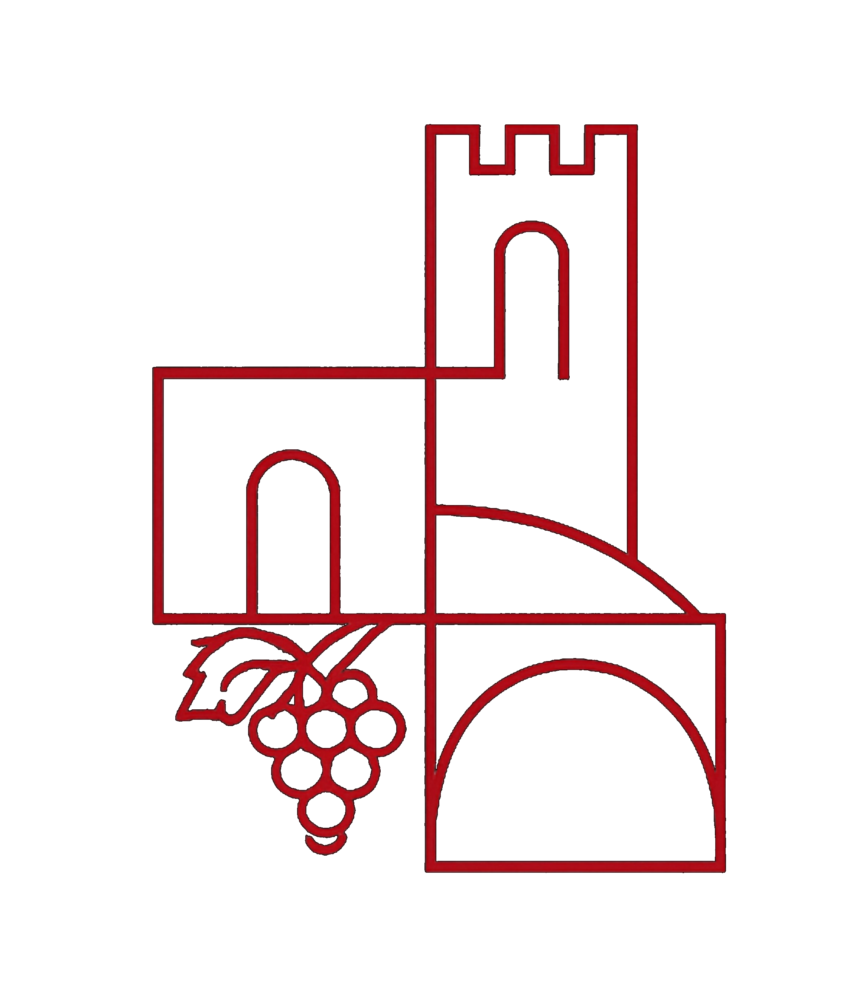
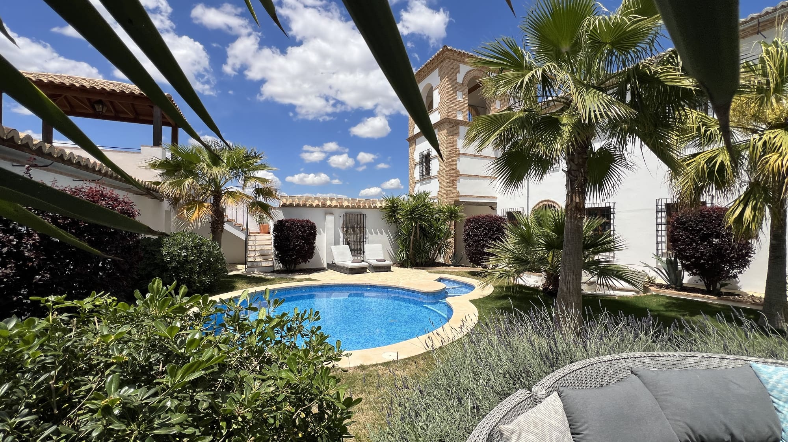
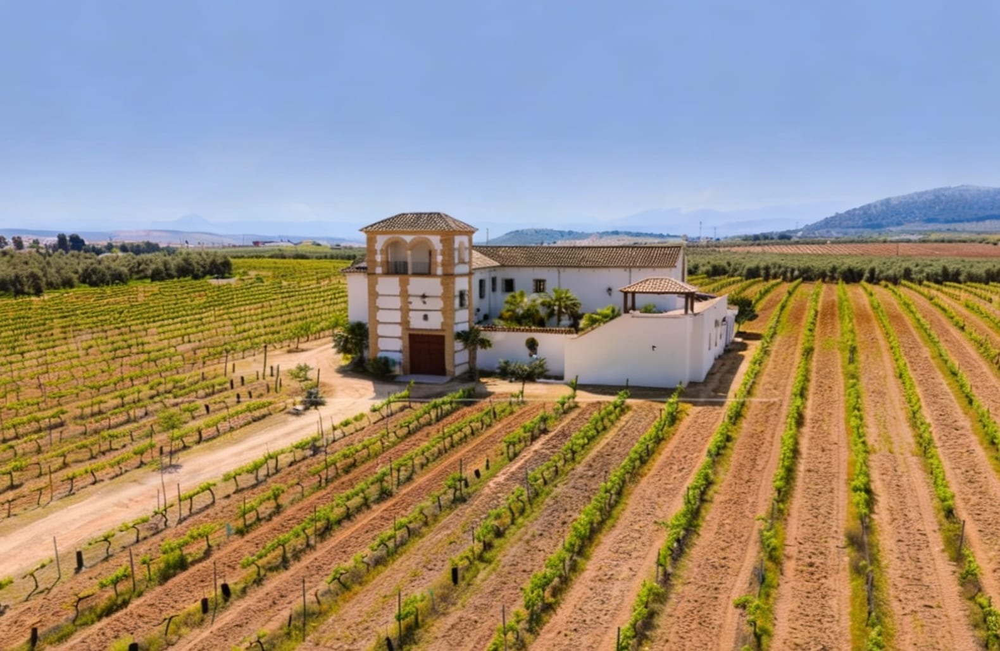
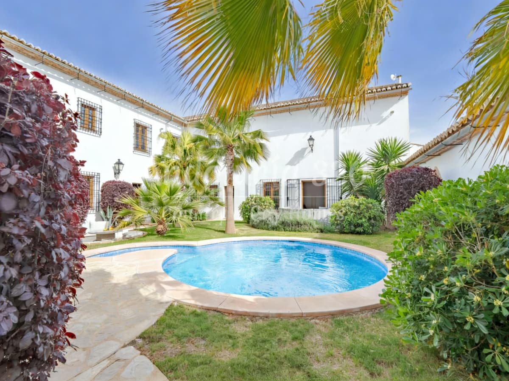
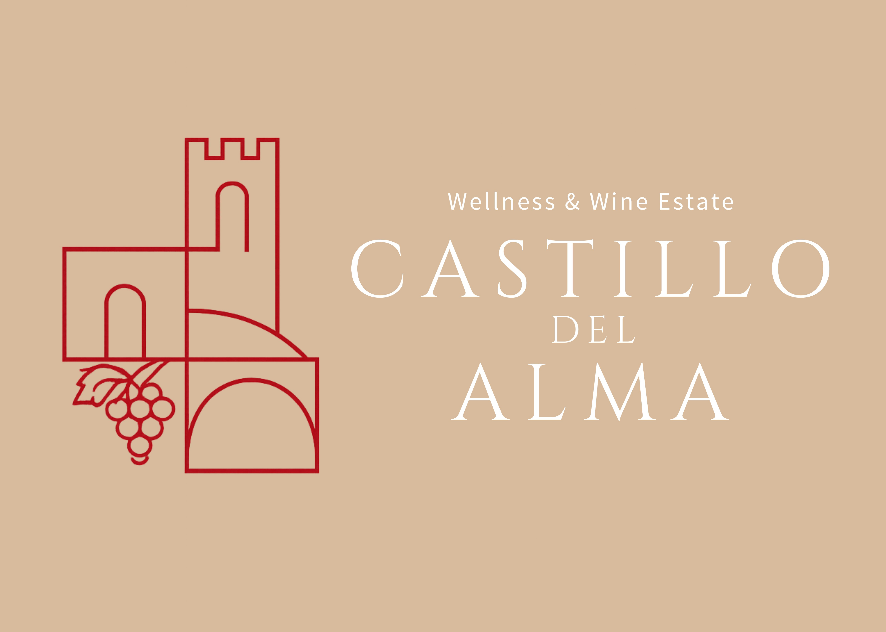
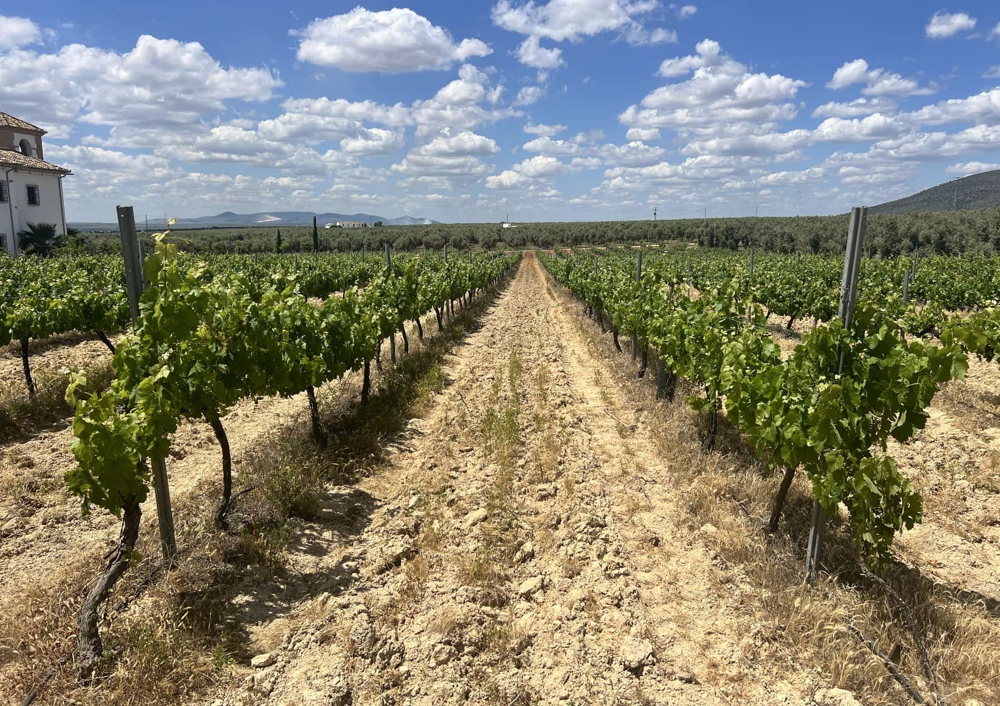
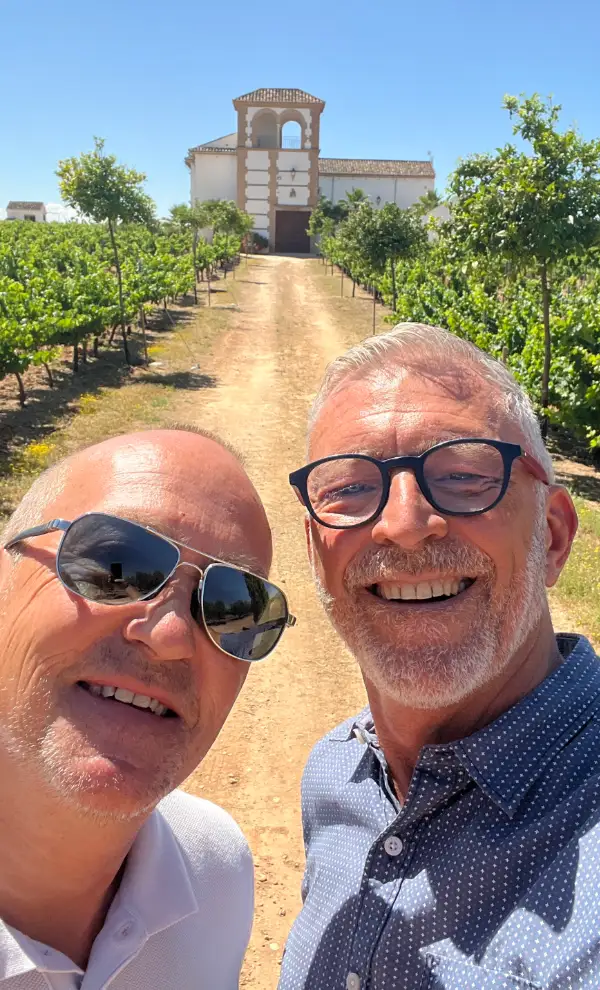

Mollina · Málaga · Andalusia
Wellness & Wine Estate

Castillo del Alma er et eksklusivt wellness- og wine estate beliggende i det andalusiske landskab omgivet af vinmarker, natur og stilhed. Her mødes slow living, velvære og autentisk sydspansk livsstil i rolige omgivelser skabt til nærvær, fordybelse og balance.
Vinmarkerne og områdets stolte vinkultur er en naturlig del af oplevelsen. Livet omkring druerne, høsten og produktionen af husets egen vin skaber en tæt forbindelse til naturen, traditionerne og det autentiske Andalusien.
Castillo del Alma er et sted for transformation — gennem wellness, retreats, stilhed og refleksion.
Uanset om du søger ro, personlig udvikling, fællesskab eller autentiske oplevelser, finder du et retreat, der passer til din rejse.
På Castillo del Alma har vi samlet nøje udvalgte retreats, der skaber plads til fordybelse, livsglæde og nye perspektiver i hjertet af Andalusien.
Du kan også leje faciliteterne til dine egne gæster, retreats eller workshops,
og virksomheder finder de perfekte rammer til seminarer, teambuilding og strategidage.
Castillo del Alma ligger smukt og fredfyldt omgivet af bølgende vinmarker og sølvgrønne olivenplantager i den lille andalusiske by Mollina, tæt ved historiske Antequera i Málaga-provinsen.
Huset er opført for blot 13 år siden, men bygget med stor respekt for den klassiske andalusiske byggestil — med varme naturmaterialer, smukke linjer og karakterfuld arkitektur.
Enhver borg har sit tårn — og Castillo del Alma har hele to. Herfra åbner et betagende 360 graders panorama sig over vinmarker, olivenlunde og Andalusiens bjerge.
Udforsk ejendommen


Castillo del Alma råder over mere end 4 hektar jord med egne vinmarker i det solrige landskab omkring Mollina. Jordbunden er rig på kalk og mineraler — som giver vinene karakter, dybde og en flot balance.
Området omkring Mollina er særligt kendt for sine mange solskinstimer, varme dage og køligere nætter, som skaber optimale betingelser for dyrkning af kvalitetsdruer. Jordbunden i området er rig på kalk og mineraler, hvilket giver vinene karakter, dybde og en flot balance mellem frugt, fylde og elegance. Kombinationen af klimaet, højden og den andalusiske jord giver druerne mulighed for at modne langsomt og udvikle en intens og kompleks smag.

Egne vinmarker
Málaga Denominación de Origen
Samlet ejendom
Cab. Sauvignon & Merlot
Oplevelser skabt for nærvær, nydelse og forbindelsen til det autentiske Andalusien.
Lokale vine fra Andalusiens solmodnede druer
Ekstra jomfruolivenolie fra lokale produktioner
Naturparker og dramatiske bjerglandskaber
Det spanske køkken — autentisk og sanseligt
Andalusisk landskab fra hesteryg
Spektakulær kløftsti langs klippen
Kunst, kultur og gastronomisk scene
Historie, patioer og stemning fra det gamle Spanien
Hjertet af Andalusien — 15 min. væk
Nattehimmelen langt fra byernes støj
Lyserøde flamingos · 10 min. væk
Spektakulært månelandskab · 20 min.
Bjerge og grotter ved Mollina
65.000 år gamle hulemalerier · 45 min.
UNESCO Verdensarv · 15 min.
Klippetop med andalusisk legende
UNESCO verdensarv · 90 min.
Andalusiens strålende hovedstad · 1,5 t.
Málaga · Picassos fødeby · 55 min.
Et glimt af livet på Castillo del Alma — vinmarker, rum, natur og stemninger
På Castillo del Alma tror vi på, at ægte velvære begynder i det øjeblik kroppen føler sig tryg nok til at sænke tempoet.
Det moderne liv holder mange mennesker i et konstant alarmberedskab – mentalt, følelsesmæssigt og fysisk. Her, omgivet af stilhed, natur og den varme middelhavsatmosfære, skaber vi et rum hvor nervesystemet kan falde til ro, regulere sig selv og finde tilbage til balance.
Vores wellness- og healingoplevelser er skabt til at støtte dyb restitution, indre ro og en nænsom genforbindelse mellem krop og sind.
Gennem guidede breathwork-sessioner arbejder vi med åndedrættet som et kraftfuldt redskab til at berolige nervesystemet, frigøre spændinger og skabe en dybere forbindelse til kroppen.
Læs mere →Meditation og stilhed giver mulighed for at trække sig væk fra støj, krav og konstant aktivitet. I stilheden opstår ofte en naturlig følelse af klarhed, nærvær og indre fred.
Læs mere →Somatic therapy arbejder med forbindelsen mellem kroppen, følelserne og nervesystemet. Stress og følelsesmæssige belastninger sætter sig ofte fysisk i kroppen. Gennem kropsbevidsthed, grounding og nænsomme terapeutiske teknikker skabes der plads til forløsning og balance.
Læs mere →Healing hos Castillo del Alma handler ikke om perfektion, men om at skabe de rette rammer for at kroppen og sindet kan finde tilbage til sig selv. Gennem nærvær, omsorg, energi og menneskelig kontakt oplever mange en dybere følelse af ro og indre balance.
Læs mere →Massage er en effektiv måde at afspænde kroppen og regulere nervesystemet på. Vores behandlinger er designet til at løsne spændinger, stimulere kroppens naturlige restitution og skabe en følelse af dyb afslapning og velvære.
Læs mere →Poolområdet er skabt som et fredfyldt frirum til ro og restitution. Vandet, solen og de rolige omgivelser inviterer til at give slip, sænke skuldrene og finde tilbage til en mere naturlig rytme.
Læs mere →Mange mennesker ankommer mentalt trætte, overstimulerede eller afkoblet fra sig selv. Gennem hvile, søvn, stilhed, nærende omgivelser og terapeutiske oplevelser tilbyder Castillo del Alma et ægte "nervous system reset" – hvor kroppen får mulighed for at vende tilbage til en mere rolig og balanceret tilstand.
Læs mere →"Her handler wellness ikke om præstation.
Det handler om at trække vejret dybere, sove bedre,
mærke mere ro – og finde hjem til sig selv igen."
Efter tre års søgen i Andalusien fandt vi det. Castillo del Alma er ikke bare et hus — det er præcis det vi havde drømt om. Et sted vi selv vil bo, og som vi med stolthed kan åbne for vores gæster.
Vores drøm er at skabe et sted, hvor folk kan trække vejret. Langt fra støj og travlhed — hvor gode oplevelser, stilhed og menneskelig varme er det eneste, der tæller. Et sted der giver plads til nærvær, fordybelse og minder for livet.
Vi er Michael og Erik — et par der har været sammen siden 1988 og igennem hele vores fælles liv har delt én overbevisning: man skal kun bruge tiden på det, der giver mening og glæde.
Bag os har vi 30 år i TV- og videoproduktionsbranchen, en restaurant, et bed & breakfast og en lang række andre projekter. Vores drivkraft har aldrig været ambition for sin egen skyld, men lysten til at skabe noget autentisk — med os selv som aktive deltagere i det vi laver.

"Castillo del Alma er ikke bare et sted — det er en tilstand. Jeg kom for at hvile og rejste hjem forandret."— Gæst, Kunsten at sænke tempoet · 2024
Oplevelse